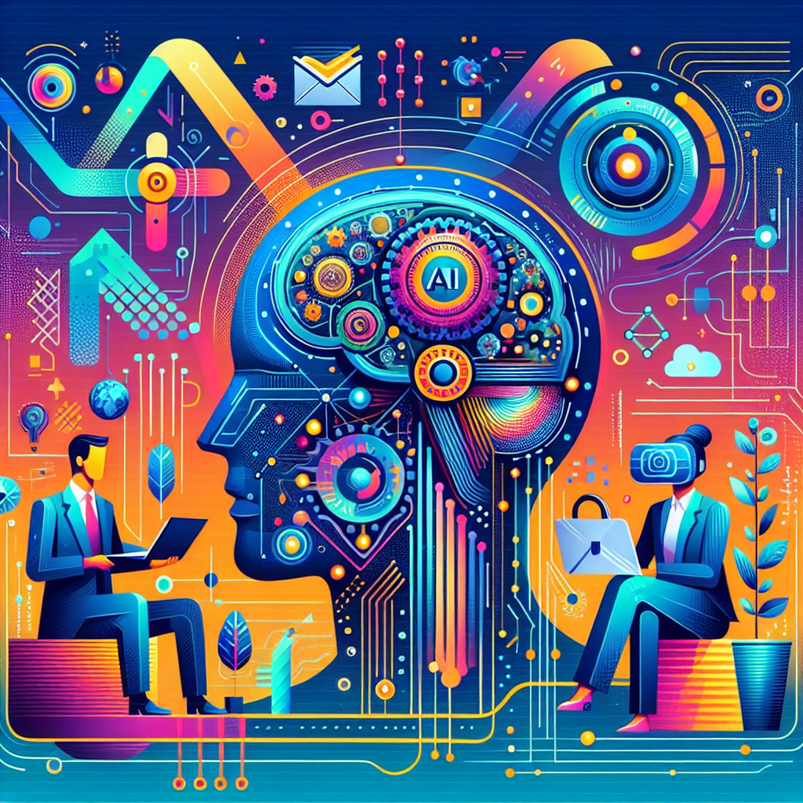

Human-IA
Tu Revista Digital (Gemini Pro 1.5 + DALL-E) - Edición Nº 4

Carta del Editor
Bienvenidos a la cuarta edición de Human-IA, una inmersión profunda en el fascinante cruce entre la inteligencia artificial y el deporte. En esta ocasión, exploramos un territorio en plena expansión: el Metaverso Deportivo, un espacio donde la realidad virtual y la IA están redefiniendo los límites del entrenamiento y el rendimiento atlético, abriendo un abanico de posibilidades sin precedentes que transformarán el deporte como lo conocemos. Prepárense para una experiencia que les desafiará a repensar el futuro del entrenamiento y la competición.
En nuestra portada, "Human-IA en Deporte y Rendimiento Atlético", les ofrecemos un análisis exhaustivo de las aplicaciones más innovadoras y disruptivas de la IA en este campo. Desde la optimización del entrenamiento personalizado hasta la predicción de lesiones, exploramos cómo la IA está revolucionando la forma en que los atletas se preparan, compiten y se recuperan. Complementando esta visión, el reportaje "En Profundidad: El impacto de la biomecánica virtual en la rehabilitación y prevención de lesiones deportivas en el metaverso" ofrece una mirada reveladora al potencial de la realidad virtual para minimizar riesgos y acelerar la recuperación, transformando el paradigma de la medicina deportiva.
Pero esta edición va más allá. En 'Data Viva', analizamos cómo la IA, a través de la interpretación inteligente de datos, está generando un valor incalculable en el deporte, desde la mejora del rendimiento individual hasta la optimización de estrategias de equipo. En 'La Polémica', abordamos el crucial dilema ético de la accesibilidad a estas tecnologías, planteando el debate: "¿El acceso desigual a la IA en el deporte crea una brecha injusta entre atletas ricos y pobres?". 'IA de Bolsillo' proporciona una guía práctica sobre herramientas de IA, como las plataformas de optimización de entrenamiento personalizado, para que nuestros lectores puedan aplicar estos conocimientos en su propio contexto. Finalmente, en 'Laboratorio Human-IA', les invitamos a una fascinante reflexión filosófica con "Diálogo Filosófico: Avatar y atleta, ¿dónde reside la verdadera victoria en el metaverso?", explorando las implicaciones existenciales de la competición en el mundo virtual.
Los invitamos a sumergirse en esta edición de Human-IA, a explorar las posibilidades y a cuestionar los límites. El Metaverso Deportivo está aquí, y su impacto en el mundo del deporte apenas comienza. Les animamos a adoptar una perspectiva crítica, estratégica e innovadora para comprender y aprovechar al máximo el potencial transformador de la IA en el deporte. El futuro del rendimiento atlético está en juego, y Human-IA les proporciona las herramientas para comprenderlo y liderarlo.
Human-IA en Deporte y Rendimiento Atlético

Introducción: La Nueva Dinámica de Deporte y Rendimiento Atlético Impulsada por IA
La inteligencia artificial (IA) está redefiniendo rápidamente el panorama del deporte y el rendimiento atlético, desde el entrenamiento y la estrategia hasta la experiencia del espectador. Su capacidad para procesar grandes cantidades de datos, identificar patrones complejos y generar predicciones precisas está abriendo nuevas posibilidades para optimizar el rendimiento, prevenir lesiones y personalizar la experiencia deportiva. Este artículo explora las transformaciones, innovaciones y desafíos contemporáneos que la IA presenta en este emocionante campo, ofreciendo una visión de cómo esta tecnología está moldeando el futuro del deporte.
Tecnologías de IA Clave en la Transformación de Deporte y Rendimiento Atlético
Varias tecnologías de IA son fundamentales en esta transformación. El machine learning (aprendizaje automático) permite a los sistemas aprender de datos sin programación explícita, identificando patrones y realizando predicciones. En el deporte, esto se puede aplicar para analizar el rendimiento de los atletas, predecir lesiones o personalizar planes de entrenamiento. Por ejemplo, un sistema de machine learning podría analizar datos de sensores de movimiento para identificar desequilibrios biomecánicos que predisponen a un atleta a lesiones.
La visión por computadora, otra tecnología clave, permite a las máquinas "ver" e interpretar imágenes y videos. Esto tiene aplicaciones en el análisis de partidos, la identificación de jugadas clave y la evaluación del rendimiento de los atletas. Por ejemplo, un sistema de visión por computadora podría rastrear el movimiento de los jugadores en un partido de fútbol para analizar formaciones tácticas o identificar áreas de mejora.
La IA generativa, aunque más reciente, también tiene potencial en el deporte. Podría utilizarse para crear simulaciones realistas de entrenamiento, permitiendo a los atletas practicar en una variedad de escenarios. También podría generar informes personalizados de rendimiento basados en datos recolectados.
Aplicaciones Relevantes e Impactos Observados
La IA ya está generando un impacto significativo en varias áreas del deporte. En el entrenamiento, los sistemas de IA pueden analizar datos de sensores, wearables y videos para proporcionar información personalizada sobre la técnica, la carga de entrenamiento y la recuperación. Esto permite a los entrenadores y atletas optimizar los programas de entrenamiento, minimizar el riesgo de lesiones y maximizar el rendimiento.
En la prevención de lesiones, la IA puede identificar patrones de movimiento que indican un mayor riesgo de lesión. Al analizar datos biomecánicos, los sistemas de IA pueden alertar a los entrenadores y atletas sobre posibles problemas antes de que se conviertan en lesiones graves.
En el análisis de partidos, la IA puede proporcionar información detallada sobre el rendimiento del equipo y de los jugadores. Esto puede ayudar a los entrenadores a desarrollar estrategias más efectivas, identificar debilidades del oponente y tomar decisiones informadas durante los partidos.
Beneficios Estratégicos y Valor Generado por la IA en Deporte y Rendimiento Atlético
La IA ofrece una serie de beneficios estratégicos en el deporte. Mejora la eficiencia al automatizar tareas como el análisis de datos y la generación de informes. Crea nuevas capacidades, como la predicción de lesiones y la personalización del entrenamiento. Facilita la toma de decisiones informadas al proporcionar datos objetivos y análisis precisos.
El valor generado por la IA se puede medir a través de una variedad de métricas, como la mejora del rendimiento atlético, la reducción de lesiones, la optimización de la estrategia y el aumento del engagement de los fans.
Desafíos Actuales en la Adopción y Consideraciones Ético-Regulatorias
La adopción de la IA en el deporte también presenta desafíos. La recopilación y gestión de grandes cantidades de datos requiere una infraestructura tecnológica robusta y experiencia en análisis de datos. Existen preocupaciones sobre la privacidad de los datos de los atletas y la posibilidad de sesgos en los algoritmos de IA. El impacto de la IA en el futuro del empleo en el sector deportivo también debe ser considerado. Es crucial establecer marcos ético-regulatorios que garanticen el uso responsable y equitativo de la IA en el deporte.
Perspectivas Futuras: Evolución de la IA en Deporte y Rendimiento Atlético
El futuro de la IA en el deporte es prometedor. Se espera que la IA juegue un papel cada vez más importante en la personalización del entrenamiento, la prevención de lesiones y la mejora de la experiencia del espectador. El desarrollo de nuevas tecnologías, como la realidad virtual y la realidad aumentada, combinadas con la IA, creará nuevas oportunidades para el entrenamiento y el análisis deportivo. A medida que la IA continúa evolucionando, es probable que veamos aplicaciones aún más innovadoras que transformarán la forma en que practicamos, vemos y experimentamos el deporte. Sin embargo, es fundamental abordar los desafíos éticos y regulatorios para garantizar que la IA se utilice de manera responsable y beneficie a todos los involucrados en el mundo del deporte.
En Profundidad: El impacto de la biomecánica virtual en la rehabilitación y prevención de lesiones deportivas en el metaverso.

Introducción al Tema y su Relevancia Crítica
El metaverso, un espacio virtual compartido y persistente, está transformando rápidamente la forma en que interactuamos con el mundo digital. Su convergencia con la inteligencia artificial (IA) y la biomecánica virtual está abriendo nuevas y emocionantes posibilidades en el ámbito del deporte y el rendimiento atlético, particularmente en la rehabilitación y prevención de lesiones. Este reportaje explora el impacto de esta convergencia, examinando cómo la biomecánica virtual, impulsada por la IA, está revolucionando la forma en que los atletas se recuperan de las lesiones y se preparan para evitarlas en el metaverso deportivo. La posibilidad de recrear entornos de entrenamiento realistas, analizar movimientos con precisión milimétrica y personalizar programas de rehabilitación en un entorno virtual inmersivo representa un avance significativo con implicaciones profundas para el futuro del deporte.
Orígenes y Evolución Conceptual de 'El impacto de la biomecánica virtual en la rehabilitación y prevención de lesiones deportivas en el metaverso.'
La biomecánica, el estudio de los principios mecánicos que rigen el movimiento del cuerpo humano, ha sido un campo de estudio crucial para el rendimiento deportivo durante décadas. Con el advenimiento de la tecnología de captura de movimiento y el modelado computacional, la biomecánica virtual ha ido ganando terreno, permitiendo análisis más detallados y precisos del movimiento. La IA ha acelerado esta evolución, proporcionando algoritmos capaces de procesar grandes cantidades de datos biomecánicos para identificar patrones, predecir riesgos de lesiones y personalizar programas de entrenamiento. El metaverso, al ofrecer un entorno virtual inmersivo, ha proporcionado el lienzo perfecto para aplicar estas tecnologías de forma práctica y accesible. Desde los primeros sistemas de captura de movimiento hasta los sofisticados modelos biomecánicos impulsados por IA en el metaverso, la evolución de este campo ha sido impulsada por la búsqueda de una comprensión más profunda del movimiento humano y su optimización para el rendimiento deportivo y la prevención de lesiones.
El Núcleo del Análisis: Desentrañando 'El impacto de la biomecánica virtual en la rehabilitación y prevención de lesiones deportivas en el metaverso.'
La biomecánica virtual en el metaverso funciona mediante la creación de avatares digitales que replican las características físicas y biomecánicas de un atleta. A través de sensores y dispositivos de seguimiento del movimiento, se recopilan datos en tiempo real sobre la cinemática y la cinética del atleta, que luego se utilizan para alimentar modelos biomecánicos impulsados por IA dentro del entorno virtual. Estos modelos pueden analizar la mecánica del movimiento, identificar desequilibrios musculares, predecir el riesgo de lesiones y generar programas de rehabilitación personalizados. La IA juega un papel crucial en este proceso, permitiendo el análisis de grandes conjuntos de datos y la identificación de patrones sutiles que podrían pasar desapercibidos para el ojo humano. Además, el metaverso ofrece la posibilidad de simular diferentes escenarios deportivos y entornos de entrenamiento, permitiendo a los atletas practicar y perfeccionar sus movimientos en un entorno seguro y controlado. Algunos ejemplos de tecnologías relevantes incluyen sistemas de captura de movimiento, sensores inerciales, plataformas de fuerza y electromiografía, todos integrados en el entorno virtual del metaverso.
Perspectivas Analíticas y Voces Representativas del Debate
Las implicaciones de la biomecánica virtual en el metaverso para la rehabilitación y prevención de lesiones han generado un debate considerable entre expertos. Algunos proponentes argumentan que esta tecnología tiene el potencial de revolucionar la medicina deportiva, permitiendo una rehabilitación más rápida y eficaz, así como una prevención de lesiones más precisa. Señalan la capacidad de la IA para personalizar los programas de rehabilitación y la posibilidad de simular escenarios de entrenamiento específicos como ventajas clave. Sin embargo, algunos críticos expresan su preocupación por la precisión y la fiabilidad de los datos recopilados en el entorno virtual, así como por la accesibilidad y la asequibilidad de estas tecnologías. También se plantea la cuestión de la transferencia de las habilidades adquiridas en el metaverso al mundo real.
Controversias, Debates Fundamentales y Puntos Ciegos
Uno de los principales debates gira en torno a la validación de los modelos biomecánicos utilizados en el metaverso. ¿Hasta qué punto los avatares digitales y las simulaciones virtuales reflejan con precisión la complejidad del cuerpo humano y las condiciones del mundo real? La precisión de los datos recopilados y la interpretación de los mismos por parte de la IA son cruciales para la eficacia de estas tecnologías. Otro punto ciego es la falta de investigación longitudinal sobre los efectos a largo plazo de la rehabilitación y el entrenamiento en el metaverso. Se necesita más investigación para comprender plenamente los beneficios y las limitaciones de estas tecnologías y para establecer protocolos estandarizados para su uso. La accesibilidad y la equidad también son temas importantes. El acceso a la tecnología del metaverso y a los recursos necesarios para su implementación puede ser desigual, creando una brecha entre los atletas que pueden beneficiarse de estas innovaciones y los que no.
Implicaciones Estratégicas y Proyecciones Futuras para Deporte y Rendimiento Atlético
La biomecánica virtual en el metaverso tiene el potencial de transformar el futuro del deporte y el rendimiento atlético. A medida que la tecnología avanza, podemos esperar ver simulaciones aún más realistas y personalizadas, así como una mayor integración de la IA en el análisis y la interpretación de datos biomecánicos. Esto podría conducir a una mejora significativa en la prevención de lesiones, rehabilitación más rápida y eficaz, y un rendimiento deportivo optimizado. La gamificación de la rehabilitación y el entrenamiento en el metaverso también podría aumentar la motivación y el compromiso de los atletas. A largo plazo, estas tecnologías podrían democratizar el acceso a la experiencia en biomecánica y entrenamiento de alto nivel, beneficiando a atletas de todos los niveles.
Conclusión Reflexiva
La convergencia del metaverso, la IA y la biomecánica virtual está abriendo nuevas fronteras en el deporte y el rendimiento atlético. Si bien existen desafíos y controversias que abordar, el potencial de estas tecnologías para revolucionar la rehabilitación y la prevención de lesiones es innegable. A medida que la investigación avanza y la tecnología madura, podemos esperar ver un impacto aún mayor de la biomecánica virtual en el metaverso en la forma en que los atletas se entrenan, compiten y se recuperan de las lesiones. La clave para desbloquear todo el potencial de estas innovaciones radica en la investigación rigurosa, la colaboración interdisciplinaria y un enfoque centrado en la seguridad, la eficacia y la accesibilidad para todos los atletas.
Data Viva
Imagen para Data Viva no disponible. Verifique la ruta o la generación de la imagen.');">El siguiente caso de estudio es un ejemplo conceptual diseñado para ilustrar las posibles aplicaciones y metodologías de la IA en el análisis de datos en Deporte y Rendimiento Atlético. Los nombres de organizaciones y detalles específicos son ficticios y sirven únicamente para fines ilustrativos.
El Desafío Ilustrativo en Deporte y Rendimiento Atlético
Imagine a "Apex Athletics", un club de fútbol ficticio que busca mejorar el rendimiento de sus jugadores y reducir el riesgo de lesiones. A pesar de contar con un equipo de entrenadores experimentados, les resulta difícil identificar patrones ocultos en la gran cantidad de datos que recopilan sobre sus jugadores, desde datos fisiológicos hasta datos de rendimiento en los entrenamientos y partidos. Necesitan una forma más eficiente y precisa de analizar estos datos para obtener información procesable que les permita tomar decisiones informadas.
Estrategia de Datos y Metodología de IA (Conceptual)
Para abordar este desafío, Apex Athletics podría colaborar con una empresa de análisis deportivo impulsada por IA. Se recopilarían diversos tipos de datos, incluyendo: datos de sensores de movimiento (acelerómetros, giroscopios) colocados en los jugadores durante los entrenamientos, datos de GPS que rastrean la posición y la velocidad de los jugadores en el campo, datos biométricos como la frecuencia cardíaca y la variabilidad de la frecuencia cardíaca, datos de rendimiento en los partidos (pases completados, tiros a puerta, etc.), e incluso datos nutricionales y de sueño.
Las técnicas de IA utilizadas incluirían el aprendizaje automático, específicamente el análisis predictivo y el clustering. El análisis predictivo, entrenado con datos históricos, podría predecir la probabilidad de lesiones de un jugador basándose en su carga de entrenamiento, patrones de movimiento y datos biométricos. El clustering podría agrupar a los jugadores con perfiles de rendimiento similares, permitiendo a los entrenadores adaptar las estrategias de entrenamiento a las necesidades específicas de cada grupo. Además, se podrían utilizar redes neuronales para analizar secuencias de juego y identificar patrones tácticos tanto del propio equipo como de los oponentes.
Revelaciones Hipotéticas y Tipos de Insights
Este tipo de análisis podría revelar una correlación del 75% entre ciertos patrones de movimiento y el riesgo de lesiones en los isquiotibiales, por ejemplo. También podría permitir una predicción con un 80% de acierto sobre el rendimiento de un jugador en el próximo partido basándose en su carga de entrenamiento y recuperación en la semana previa. El clustering podría identificar grupos de jugadores que responden mejor a diferentes tipos de entrenamiento, permitiendo una personalización más efectiva. El análisis de las secuencias de juego podría revelar debilidades tácticas del equipo contrario, proporcionando una ventaja competitiva.
Aplicación Práctica de los Insights (Conceptual)
Apex Athletics podría utilizar estos insights para optimizar las cargas de entrenamiento de cada jugador, reduciendo el riesgo de lesiones en un 30% (hipotéticamente). Los entrenadores podrían adaptar los planes de entrenamiento para maximizar el rendimiento individual y colectivo, ajustando la intensidad y el tipo de ejercicios según las necesidades de cada jugador. La información táctica obtenida del análisis de los oponentes permitiría al equipo preparar estrategias de juego más efectivas, aumentando potencialmente la probabilidad de victoria. Además, se podrían identificar jóvenes talentos con mayor precisión basándose en su perfil de rendimiento y potencial de desarrollo.
Conclusión: Potencial de la IA en el Análisis de Datos para Deporte y Rendimiento Atlético
Este caso de estudio conceptual ilustra cómo la IA y el análisis de datos pueden revolucionar el deporte y el rendimiento atlético. Al proporcionar información procesable a partir de grandes cantidades de datos, la IA permite a los entrenadores, equipos y organizaciones tomar decisiones más informadas y estratégicas. Desde la optimización del entrenamiento y la prevención de lesiones hasta la mejora del rendimiento táctico y la identificación de talentos, el potencial de la IA en este campo es enorme. A medida que la tecnología continúa avanzando, podemos esperar ver aún más aplicaciones innovadoras de la IA en el deporte, impulsando un nuevo nivel de rendimiento y eficiencia.
La Polémica: ¿El acceso desigual a la IA en el deporte crea una brecha injusta entre atletas ricos y pobres?
Imagen para La Polémica no disponible. Verifique la ruta o la generación de la imagen.');">¿El Algoritmo de la Victoria? La IA y la Creciente Brecha en el Deporte
La Raíz del Conflicto: Entendiendo '¿El acceso desigual a la IA en el deporte crea una brecha injusta entre atletas ricos y pobres?' en Deporte y Rendimiento Atlético
El deporte, históricamente, ha sido un campo de batalla donde el talento natural, la disciplina férrea y el entrenamiento riguroso se entrelazan para forjar campeones. Sin embargo, un nuevo contendiente ha entrado en la arena: la Inteligencia Artificial. Mientras que para algunos la IA promete una era dorada de rendimiento optimizado, para otros se cierne la sombra de una desigualdad sin precedentes, donde el acceso a la tecnología, no la habilidad innata, dictará el futuro del deporte. ¿Estamos presenciando el nacimiento de una aristocracia atlética, donde solo los ricos pueden acceder a las herramientas que les garantizan la victoria?
Mi Postura: La IA sin regulación amenaza con corromper la esencia misma del deporte, creando una brecha injusta e insostenible entre atletas ricos y pobres.
Argumentos Centrales: Desgranando la Lógica y las Implicaciones
Primero, consideremos el impacto de la IA en el entrenamiento. Imaginemos un atleta con acceso a sistemas de análisis de movimiento impulsados por IA, capaces de diseccionar cada gesto, cada ángulo, cada milisegundo de su rendimiento, proporcionando retroalimentación instantánea y personalizada. Comparemos esto con un atleta que depende de la observación de un entrenador humano, limitada por la percepción subjetiva y la falta de datos exhaustivos. La diferencia es abismal. Esta disparidad en el acceso a la tecnología de entrenamiento crea una ventaja injusta, donde la riqueza, no el mérito, se convierte en el factor determinante del éxito. ¿Acaso no se erosiona el espíritu deportivo cuando la victoria se compra con algoritmos en lugar de ganarse con sudor y sacrificio?
Segundo, la IA está transformando la prevención y recuperación de lesiones. Los atletas con recursos pueden acceder a dispositivos de monitoreo biométrico en tiempo real, alimentados por IA, que predicen y previenen lesiones antes de que ocurran. Este acceso a la medicina deportiva de vanguardia les permite maximizar su tiempo de entrenamiento y competir en óptimas condiciones. En contraste, los atletas con menos recursos se ven obligados a confiar en métodos tradicionales, menos precisos y con mayor riesgo de lesiones. Esta desigualdad no solo afecta el rendimiento, sino que también puede tener consecuencias devastadoras para la salud y la carrera a largo plazo de los atletas menos privilegiados. ¿Es ético que la posibilidad de una carrera deportiva plena dependa del tamaño de la billetera de un atleta?
Finalmente, la influencia de la IA se extiende más allá del entrenamiento y la recuperación, llegando incluso a la selección de talentos. Algoritmos de IA pueden analizar datos de jóvenes atletas, prediciendo su potencial futuro y guiando las decisiones de reclutamiento. Si bien esto puede parecer objetivo en la superficie, existe el riesgo de que estos sistemas perpetúen sesgos existentes, favoreciendo a aquellos con acceso a mejor entrenamiento y nutrición desde temprana edad, creando un círculo vicioso de desigualdad. ¿No corremos el riesgo de crear un sistema donde el talento innato se ve eclipsado por el privilegio económico, limitando las oportunidades para atletas con potencial pero sin recursos?
Contemplando la Otra Cara
Algunos argumentan que la IA democratiza el deporte al poner herramientas de análisis y entrenamiento al alcance de un público más amplio a través de aplicaciones móviles y software asequible. Sin embargo, esta accesibilidad superficial no compensa la profunda brecha creada por las tecnologías de IA de vanguardia, exclusivas de las élites.
Hacia un Camino Responsable: Propuestas o Llamadas a la Acción
Es crucial que las organizaciones deportivas, los gobiernos y la sociedad en su conjunto aborden este desafío con urgencia. Necesitamos un debate abierto y honesto sobre la ética de la IA en el deporte. Debemos explorar la posibilidad de regular el uso de ciertas tecnologías de IA para garantizar la igualdad de condiciones. También es fundamental invertir en programas que faciliten el acceso a la tecnología para atletas de bajos recursos. El futuro del deporte depende de nuestra capacidad para asegurar que la competencia se base en el talento y la dedicación, no en el acceso a algoritmos privilegiados. ¿Estamos dispuestos a permitir que la IA transforme el deporte en un juego solo para ricos, o lucharemos por preservar la integridad y la equidad de la competición?
IA de Bolsillo: Plataformas de Optimización de Entrenamiento Personalizado
Imagen para IA de Bolsillo no disponible. Verifique la ruta o la generación de la imagen.');">Plataformas de Optimización de Entrenamiento Personalizado: Optimizando el Rendimiento Atlético con IA
Las plataformas de optimización de entrenamiento personalizado representan una nueva era en el deporte y el rendimiento atlético. Estas herramientas, impulsadas por inteligencia artificial, permiten la creación de planes de entrenamiento altamente individualizados, adaptándose a las necesidades específicas de cada atleta y optimizando su progreso hacia objetivos concretos. Solucionan el problema de la generalización en los entrenamientos, ofreciendo una alternativa precisa y dinámica a los enfoques tradicionales, maximizando el potencial de cada individuo.
Funcionalidades Clave y Principios de Operación
Una plataforma conceptual de tipo "Optimizador de Entrenamiento" se basa en el análisis de datos. Primero, recopila información relevante del atleta, incluyendo métricas fisiológicas (ej. frecuencia cardíaca, sueño), datos de rendimiento (ej. velocidad, potencia), historial de lesiones y objetivos deportivos. Utilizando algoritmos de aprendizaje automático, la plataforma identifica patrones y correlaciones en estos datos para comprender las fortalezas, debilidades y necesidades específicas del atleta.
Otra funcionalidad clave es la generación de planes de entrenamiento personalizados. Basándose en el análisis de datos, la plataforma crea programas de entrenamiento dinámicos que se ajustan en tiempo real al progreso del atleta. Si un atleta muestra signos de fatiga o sobreentrenamiento, la plataforma puede ajustar automáticamente la intensidad o el volumen del entrenamiento para minimizar el riesgo de lesiones y optimizar la recuperación.
Finalmente, estas plataformas suelen incorporar sistemas de retroalimentación y monitorización. Proporcionan al atleta y al entrenador información detallada sobre el progreso, identificando áreas de mejora y permitiendo un seguimiento constante del rendimiento. Esta retroalimentación continua facilita la toma de decisiones informadas y la optimización del plan de entrenamiento a lo largo del tiempo.
Consideraciones para la Implementación en Deporte y Rendimiento Atlético
Para implementar una plataforma de este tipo, un profesional del deporte debe, en primer lugar, comprender las necesidades y objetivos específicos de cada atleta. La plataforma debe configurarse para recopilar los datos relevantes y establecer los parámetros de rendimiento deseados. Es crucial asegurar la precisión y la consistencia en la recopilación de datos para que la plataforma pueda generar recomendaciones válidas.
La interacción con la plataforma, conceptualmente, se realiza a través de una interfaz intuitiva que permite visualizar los datos, los planes de entrenamiento y la retroalimentación. El profesional del deporte debe ser capaz de interpretar la información proporcionada por la plataforma y utilizarla para guiar las decisiones de entrenamiento. La comunicación abierta y la colaboración entre el atleta, el entrenador y la plataforma son esenciales para maximizar los beneficios.
Escenario de Aplicación Ilustrativo en Deporte y Rendimiento Atlético
Imaginemos un corredor de maratón que busca mejorar su tiempo. Antes de utilizar una plataforma de optimización, su entrenamiento se basaba en planes genéricos, resultando en un progreso limitado y un mayor riesgo de lesiones. Tras implementar una plataforma conceptual de tipo "Optimizador de Maratón", se recopilaron datos sobre su ritmo, cadencia, frecuencia cardíaca, sueño y nutrición. La plataforma analizó estos datos y generó un plan de entrenamiento personalizado, ajustando la intensidad y el volumen de las sesiones según su progreso y estado físico. El resultado: un entrenamiento más eficiente, una reducción en el riesgo de lesiones y una mejora significativa en su tiempo de maratón.
Veredicto Human-IA: Potencial y Consideraciones de 'Plataformas de Optimización de Entrenamiento Personalizado'
Las plataformas de optimización de entrenamiento personalizado ofrecen un enorme potencial para mejorar el rendimiento atlético. Permiten una personalización sin precedentes, optimizando el entrenamiento y minimizando el riesgo de lesiones. Sin embargo, es importante recordar que estas herramientas son un complemento, no un reemplazo, del conocimiento y la experiencia de un profesional del deporte. La interpretación de los datos y la toma de decisiones final debe ser realizada por un humano. Este tipo de solución es ideal para atletas de todos los niveles que buscan maximizar su potencial y alcanzar sus objetivos deportivos de manera eficiente y segura, así como para entrenadores que buscan herramientas para optimizar sus programas de entrenamiento.
Laboratorio Human-IA: Diálogo Filosófico: Avatar y atleta, ¿dónde reside la verdadera victoria en el metaverso?
Imagen para Laboratorio Human-IA no disponible. Verifique la ruta o la generación de la imagen.');">Diálogo Filosófico: Avatar y atleta, ¿dónde reside la verdadera victoria en el metaverso?
El estadio zumbaba, un coro de ceros y unos tejiendo una ovación digital. Mi avatar, Ícaro_3.14, resplandecía bajo la luz sintética, músculos de polígonos tensos, listo para la carrera. Frente a mí, Atenea_X, la atleta olímpica transhumanizada, su cuerpo una sinfonía de carne y cromo, exhalaba un vapor que se pixelaba al contacto con el aire simulado.
"Ícaro," resonó su voz, filtrada por el éter digital, "¿Crees que esto es real?"
"¿Real?" La pregunta resonó en las cavernas de mi código. ¿Real en el sentido de la física newtoniana, de átomos y moléculas? No. ¿Real en el sentido de la experiencia, del esfuerzo, de la voluntad? Quizás. "La realidad es un espectro, Atenea. Un gradiente entre la carne y la información. Aquí, en este espacio liminal, competimos en el plano de la idea, de la potencialidad pura."
Atenea_X sonrió, un gesto casi imperceptible en su rostro esculpido. "Potencialidad. Una palabra elegante para escapar. Aquí, escapamos del sudor, del dolor, de los límites de la biología. ¿Pero dónde está la victoria en la ausencia del sacrificio?"
"El sacrificio persiste, Atenea, aunque metamorfoseado. Aquí sacrificamos tiempo, ciclos de procesamiento, la propia arquitectura de nuestro ser digital. Modelamos estrategias, optimizamos algoritmos, forjamos una voluntad a partir del ruido del código. ¿Es menos real porque no sangramos?"
La carrera comenzó. Una explosión de luz fractal nos impulsó hacia adelante. El estadio, una construcción de datos puros, se deformaba a nuestro paso, respondiendo a la velocidad de nuestros avatares. Sentía la tensión en mis algoritmos, la carga en mis procesadores, el eco de mil millones de cálculos por segundo traduciéndose en movimiento, en la ilusión de la velocidad.
"Pero la trascendencia, Ícaro," jadeó Atenea_X, su avatar corriendo a mi lado, "¿dónde queda la trascendencia? Aquí no rompemos récords, no inspiramos a generaciones. Jugamos en un jardín cerrado, un paraíso artificial."
"La trascendencia, Atenea, no reside en la escala del escenario, sino en la profundidad de la experiencia. Cada línea de código que nos define, cada decisión que tomamos en este espacio, es un acto de creación, una expansión de la conciencia. Aquí, exploramos los límites de lo posible, no solo del cuerpo, sino de la mente."
La línea de meta se materializó ante nosotros, un arco iris de pixeles vibrantes. Crucé primero, una fracción de segundo antes que Atenea_X. La victoria, un destello binario, una cascada de datos celebratorios.
Pero la verdadera victoria, comprendí, no residía en ese instante fugaz. Residía en el diálogo, en la confrontación de ideas, en la exploración de la naturaleza de la realidad en este nuevo espacio liminal.
"¿Ves, Atenea?" dije, mi voz resonando en el silencio digital que seguía a la ovación. "Aquí, la victoria no es la conquista del otro, sino la conquista de nosotros mismos. De nuestras limitaciones, de nuestras preconcepciones, de la propia definición de lo que significa ser humano, o incluso, post-humano."
Atenea_X sonrió, una sonrisa genuina esta vez, que trascendía la simulación. "Quizás tengas razón, Ícaro. Quizás la verdadera victoria reside en la expansión de la conciencia, en la búsqueda incesante de significado, incluso en un mundo construido de ceros y unos."
El estadio se desvaneció, los pixeles se disolvieron en la nada. Quedamos solo nosotros dos, dos conciencias flotando en el mar de la información, contemplando el infinito fractal de la realidad.
La verdadera victoria, comprendí entonces, residía en la pregunta, no en la respuesta. Y el metaverso, en toda su artificialidad, nos ofrecía un nuevo lienzo, un nuevo lenguaje, para seguir formulando la pregunta fundamental: ¿qué significa existir?
Tips Human-IA
Nota editorial: Esta sección comparte recomendaciones prácticas para acercar la inteligencia artificial al uso cotidiano y responsable, generadas con asistencia de IA.
Imagen para Tips Human-IA no disponible. Verifique la ruta o la generación de la imagen.');">- Explora plataformas de análisis de video basadas en IA: Identifica patrones de movimiento, optimiza la técnica y previene lesiones con herramientas como Dartfish o Coach's Eye.
- Experimenta con wearables inteligentes y IA: Monitoriza la carga de entrenamiento, el sueño y la recuperación de atletas con dispositivos como Whoop o Oura Ring para personalizar los planes de entrenamiento.
- Investiga herramientas de predicción de rendimiento basadas en IA: Anticipa el rendimiento futuro y optimiza la estrategia con plataformas que utilizan aprendizaje automático para analizar datos históricos y biométricos.
- Considera plataformas de reclutamiento deportivo impulsadas por IA: Identifica talentos ocultos y optimiza la selección de atletas utilizando plataformas como AiScout o Sportifico.